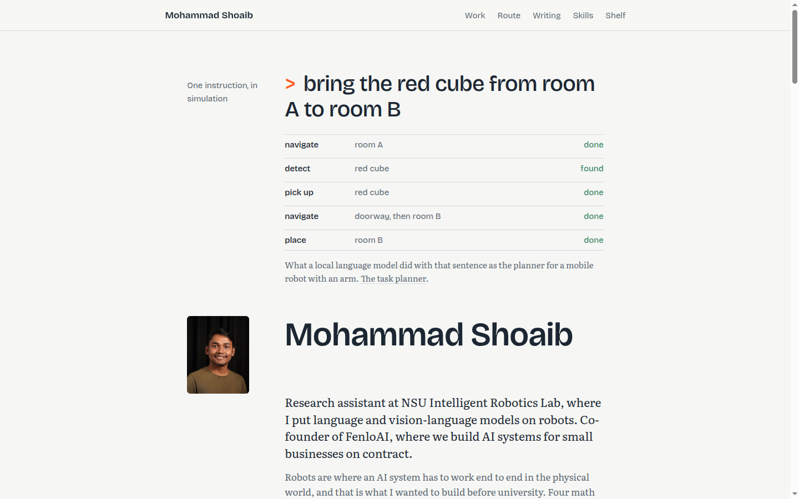
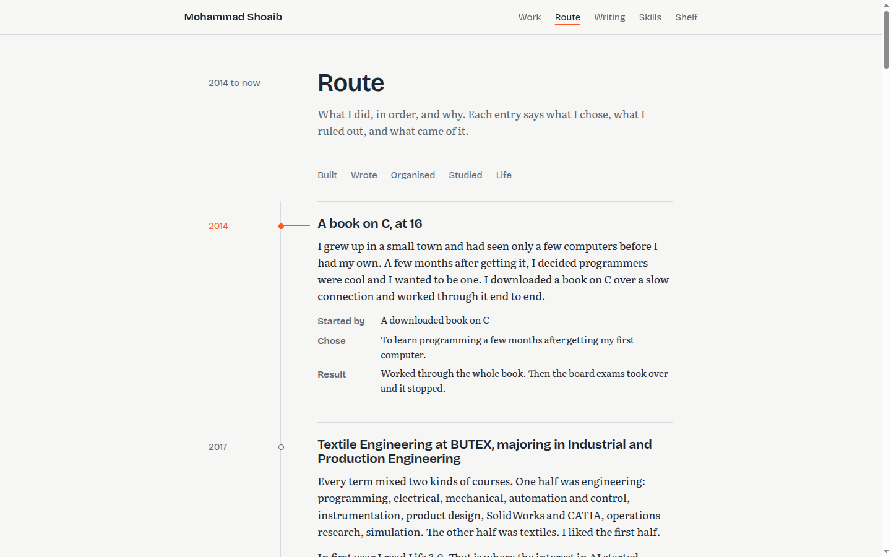
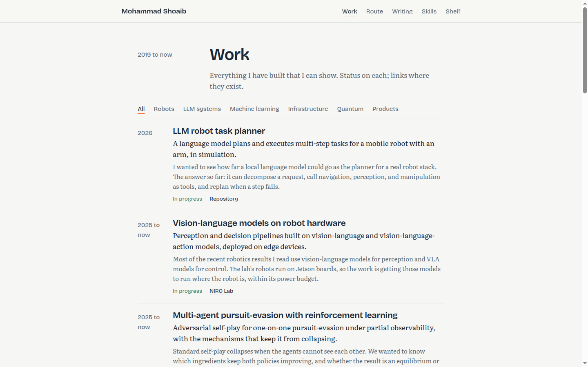
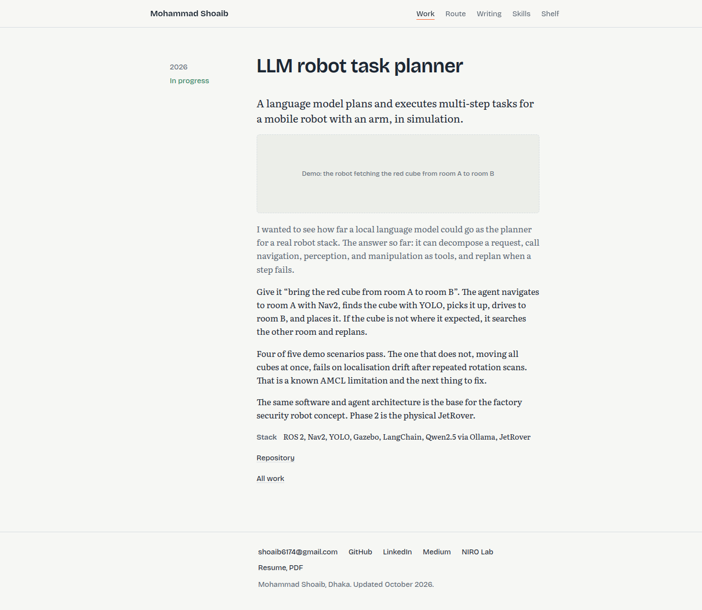
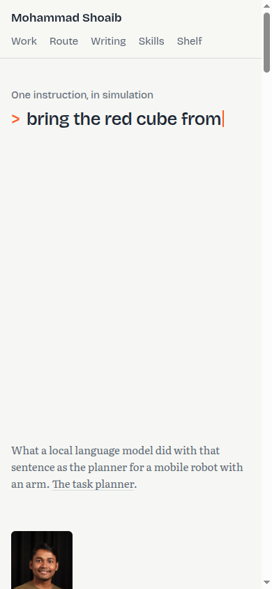
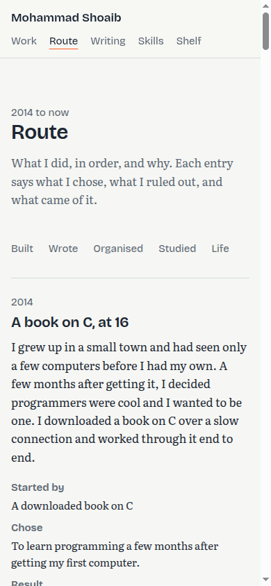

Keep it, polish from here
Direction is right. Tell me the details to change in the terminal.
Drafting-paper surface, Bricolage Grotesque for display, Literata for reading, one signal colour. The live preview is at localhost:4321 (run npm run dev in the repo if it is not up). Screens below are from the build at 1440 px and 390 px.
The hero is the real output of the task planner: one instruction typed in, the plan completing step by step, once. Then the name and the two-sentence masthead.

Dated decisions with a dimension line in the margin. The orange tick and line follow the entry you are reading.

Rows, not cards. Filters are plain words. Status is a word, never a pill.

Every work item and route entry has one. The dashed box is a slot for a photo or demo you add later.

Margin column folds above the text. The rail becomes a plain year label.

